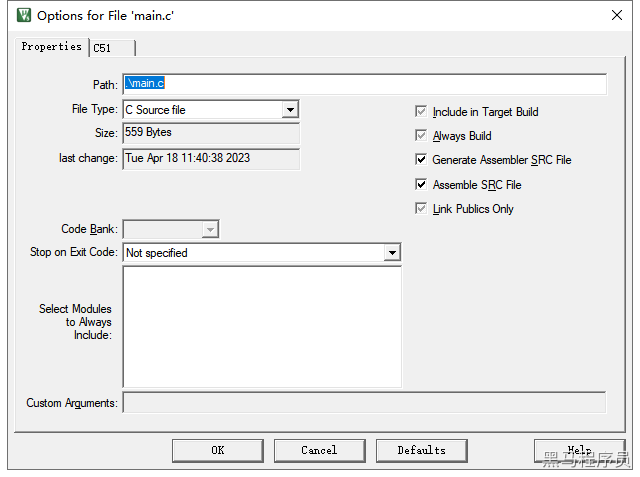
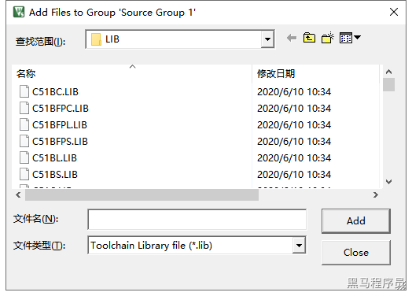
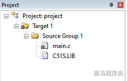

<!DOCTYPE lake>
<h2 data-lake-id="bmGOh" id="bmGOh"><span data-lake-id="u14f312fc" id="u14f312fc">1. 让源文件支持内联汇编</span></h2><p data-lake-id="u94bdbffc" id="u94bdbffc"><span data-lake-id="u57431f09" id="u57431f09">在main.c上点击右键， options for file ‘main.c’,勾选上generate Assembler SRC file和Assemble SRC file，注意勾选上是黑色的，不是灰色的。</span></p><p data-lake-id="uad65a2c9" id="uad65a2c9"></p><h2 data-lake-id="hSJzH" id="hSJzH"><span data-lake-id="ue28bd6c7" id="ue28bd6c7">2. 编写内联的汇编代码</span></h2><span class="yuque-card-unsupported">[codeblock]</span><h2 data-lake-id="CRji4" id="CRji4"><span data-lake-id="u6f62f2fb" id="u6f62f2fb">3. 添加汇编代码链接支持</span></h2><p data-lake-id="u985b9f6f" id="u985b9f6f"></p><p data-lake-id="ud06f8059" id="ud06f8059"><span data-lake-id="u9586e35a" id="u9586e35a">根据不同的编译模式，在 KEIL 安装目录表下的 keil\c51\lib\中选中相应的库文件添加到工程中</span></p><p data-lake-id="u144c4cd0" id="u144c4cd0"><strong><span data-lake-id="u01c3f436" id="u01c3f436">C51S.LIB</span></strong><span data-lake-id="u64bd6dc5" id="u64bd6dc5"> - 没有浮点运算的 Small model</span></p><p data-lake-id="u22b60dbe" id="u22b60dbe"><strong><span data-lake-id="uefa50404" id="uefa50404">C51C.LIB </span></strong><span data-lake-id="u526371de" id="u526371de">- 没有浮点运算的 Compact model</span></p><p data-lake-id="u34abe839" id="u34abe839"><strong><span data-lake-id="u2bd908aa" id="u2bd908aa">C51L.LIB</span></strong><span data-lake-id="u8bb7e182" id="u8bb7e182"> - 没有浮点运算的 Large model</span></p><p data-lake-id="u0441ffb9" id="u0441ffb9"><strong><span data-lake-id="uc281037e" id="uc281037e">C51FPS.LIB</span></strong><span data-lake-id="u5a3529a0" id="u5a3529a0"> - 带浮点运算的 Small model</span></p><p data-lake-id="u19b7f3fb" id="u19b7f3fb"><strong><span data-lake-id="u358b13b3" id="u358b13b3">C51FPC.LIB</span></strong><span data-lake-id="u68eef282" id="u68eef282"> - 带浮点运算的 Compact model</span></p><p data-lake-id="u1706d169" id="u1706d169"><strong><span data-lake-id="ua61d0dc9" id="ua61d0dc9">C51FPL.LIB</span></strong><span data-lake-id="uf45871e0" id="uf45871e0"> - 带浮点运算的 Large model</span></p><p data-lake-id="ua676d0f1" id="ua676d0f1"><span data-lake-id="ue58d31ac" id="ue58d31ac">我这里选择的是C51S.LIB库，效果如下：</span></p><p data-lake-id="u7fee718f" id="u7fee718f"></p><p data-lake-id="uf087eb19" id="uf087eb19"><span data-lake-id="uc01eb743" id="uc01eb743">​</span><br/></p><p data-lake-id="uf95dd763" id="uf95dd763"><span data-lake-id="ua562d579" id="ua562d579">搞定~</span></p>